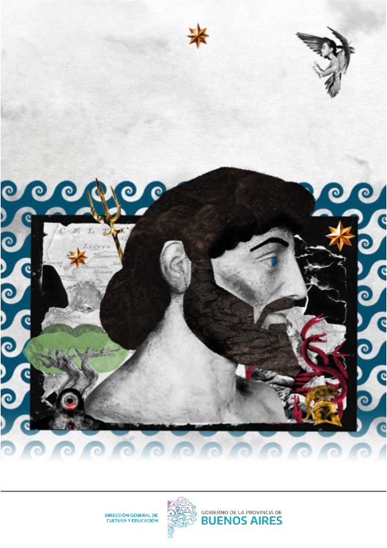
El regreso de Odiseo
El regreso de Odiseo / Adaptado por Mariana Gaitán ; Editado por Leicia Gotlibowski ; Ilustrado por Juan Battilana ; Hernán Vargas. - 1a ed adaptada. - La Plata : Dirección General de Cultura y Educación de la Provincia de Buenos Aires. Subsecretaría de Educación. Dirección Provincial de Educación Primaria, 2025.
40 p. : il. ; 21 x 15 cm.
ISBN 978-987-676-168-0
1. Mitología. 2. Mitos. I. Gaitán, Mariana, adapt. II. Gotlibowski, Leicia, ed. III. Battilana, Juan, ilus. IV. Vargas, Hernán , ilus. V. Título.
CDD 880
Provincia de Buenos Aires
Gobernador
Axel Kicillof
Adaptación: Mariana Gaitán
Ilustración: Juan Battilana y Hernán Vargas Edición: Leicia Gotlibowski
Este material ha sido elaborado por la Dirección General de Cultura y Educación de la Provincia de Buenos Aires.
Ejemplar de distribución gratuita. Prohibida su venta.
Vicegobernadora
Verónica Magario
Director General de Cultura y Educación
Alberto Sileoni
Jefe de Gabinete
Gustavo Alcaraz
Subsecretario de Educación
Pablo Urquiza
Directora Provincial de Educación Primaria
Mirta Torres
Directora Provincial de Comunicación
Carla Tous
El regreso de Odiseo
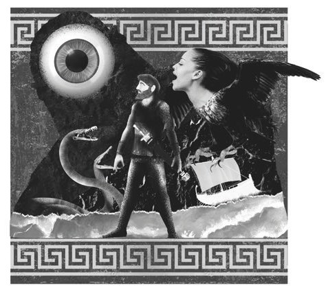

ÍNDICE
El regreso de Odiseo 6
Calipso 8
El país de los feacios 10
Odiseo y los cíclopes 13
Los consejos de Circe 18
La isla de las sirenas 20
El canal de Escila y Caribdis 22
El regreso a Ítaca 24
El encuentro de Odiseo y Telémaco 27
Penélope y el “mendigo” 30
El certamen 32
La batalla contra los pretendientes 36
El fin de la desdicha 38
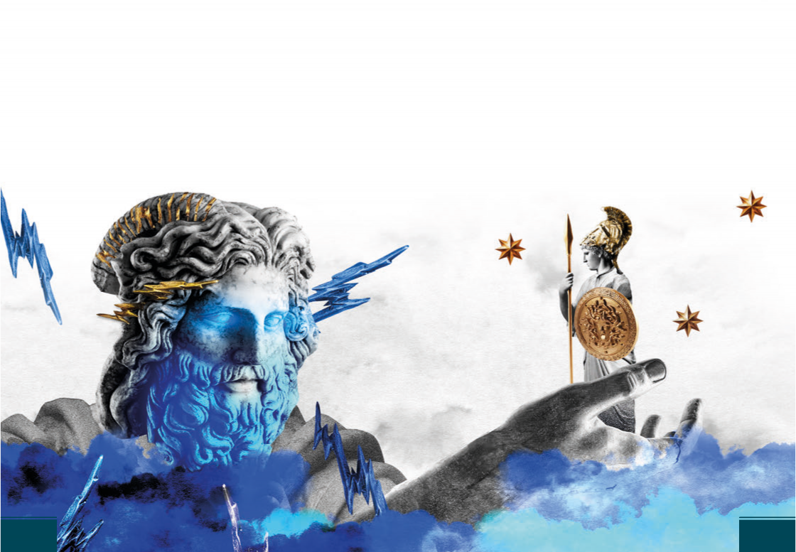
El regreso de Odiseo
—Padre mío –dijo Atenea a Zeus Olímpico, padre de todos los dioses–, ayudemos al prudente Odiseo a regresar a Ítaca, su reino. Ya todos los héroes de Troya se hallan en sus hogares. Únicamente Odiseo permanece cautivo en la gruta de Calipso, que anhela hacerlo su esposo. ¡No lo olvides, padre!
—Hija mía –respondió Zeus–. ¿Por qué afirmas que he olvidado a Odiseo, valiente entre todos los mortales? Es Poseidón quien le guarda rencor porque Odiseo cegó un día al cíclope Polifemo. Pero favorezcamos su regreso.
Atenea empuñó su brillante lanza de punta de bronce y aprestó su vuelo para descender del Olimpo.
—¡Informaré entonces a Telémaco, hijo de Odiseo, que su padre vive y ha de volver! –afirmó la diosa de claras pupilas–. El joven Telémaco es valiente pero ignora si su padre ha muerto con gloria en Troya o si ha salvado su vida. Sufre por eso la ofensa de los pretendientes de la bella Penélope, su madre, que quieren apoderarse del reino de Ítaca.
Tras estas palabras, partió Atenea como un ave veloz a dar valor a Telémaco.
—¡Hermes, hijo! –llamó por su parte Zeus–. Tú eres mi mensajero. Ve a decirle a Calipso nuestra resolución: ¡que Odiseo retorne a su patria!
6 7
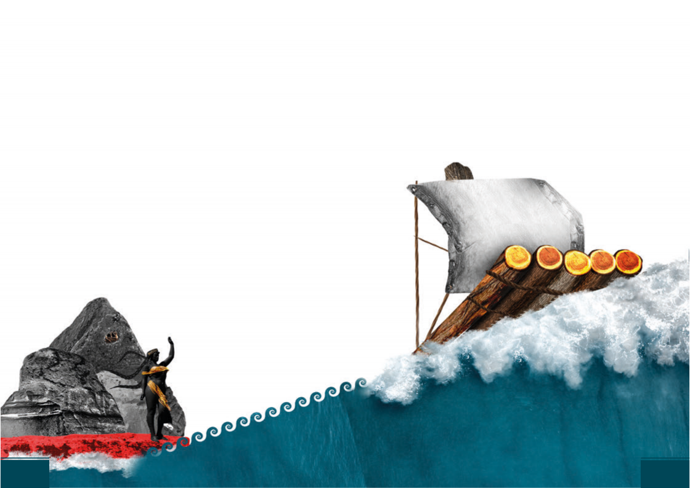
Calipso
Odiseo reposaba sobre la ribera, llorando frente al mar, cuando Calipso, de hermosas trenzas, salió de su gruta y se acercó al héroe.
—No llores más –le dijo Calipso–. Zeus te ha favorecido. Corta grandes maderos, únelos y forma una balsa para que te lleve de regreso. Yo pondré en ella pan, agua y rojo vino; te daré vestidos y enviaré al viento para que llegues sano y salvo a tu patria.
—¡Partiré, Calipso! –respondió Odiseo–. Pero no guardes enojo contra mí. Deseo volver a mi casa. ¡Diez años hace que partí hacia Troya! En cuanto se mostró la aurora, Odiseo derribó veinte troncos, los pulió con habilidad y los unió luego. En el centro de la cubierta, elevó un mástil y construyó un timón para conducir la balsa. Calipso trajo el lienzo para las velas y por fin, al cuarto día, Odiseo echó su balsa al mar. Recibió la túnica y el manto, un odre de vino negro y otro más grande de agua y suculentos alimentos. Odiseo desplegó las velas y condujo
hábilmente la nave sin que lo dominase el sueño.
Diecisiete días navegó atravesando el mar y al décimo octavo pudo observar los montes del país de los feacios. Fue entonces cuando el poderoso Poseidón vio a Odiseo de lejos y se encendió de ira. Echó mano a su tridente, cubrió de nubes la Tierra, una enorme ola rompió el mástil y cayó la vela. Pero Odiseo permaneció aferrado a las maderas de la balsa y así evitó la muerte.
Tras grandes esfuerzos, llegó a la ribera; su cuerpo estaba hinchado y de su boca manaba agua de mar; sin aliento y sin voz, quedó tendido al pie de unos juncos. La hojarasca le sirvió de lecho y cubrió su cuerpo.
8 9
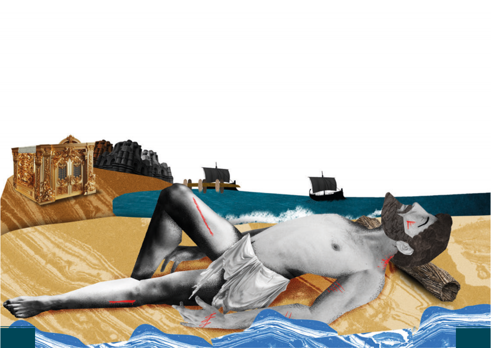
El país de los feacios
En su alto carro de fuertes ruedas, Náusica llegó hasta la boca del río con sus esclavas; antes de echar al mar sus aguas, el río formaba unos lavaderos de agua cristalina. En ese lugar, desplegaron sus vestidos y, después de limpios, los tendieron sobre la playa con algunos guijarros encima. Mientras las ropas se secaban, las jóvenes jugaban con una pelota. Una de las esclavas erró el tiro y cayó la pelota en un hondo remolino. Todas gritaron y el sonido de sus voces despertó a Odiseo.
“¡Ay de mí! ¿Qué gentes habitarán estas tierras?”, pensó el héroe. Se puso de pie, vio a Náusica y le dijo con dulces palabras:
—¡Yo te imploro, oh princesa, apiádate! Eres la primera persona a quien me acerco después de veinte días de estar preso en el mar.
¡Muéstrame la población más cercana y dame alguna ropa para cubrir mi cuerpo!
—Forastero –respondió Náusica–. Zeus te envió a estas costas. Los feacios habitan la ciudad y yo soy la hija de Alcínoo, su rey, a cuya presencia me apresuro a llevarte.
Ofreció a Odiseo túnica y manto de los que estaban extendidos en la playa y lo invitó a seguirla. Detrás de la doncella y sus esclavas, entró el héroe a la ciudad: con gran sorpresa contemplaba los puertos, las naves y los grandes muros de las moradas de aquel pueblo. La mansión del rey resplandecía al sol; a derecha e izquierda corrían muros de bronce y en lo alto de ellos se extendía una cornisa de mármol; puertas de oro cerraban la casa.
10 11
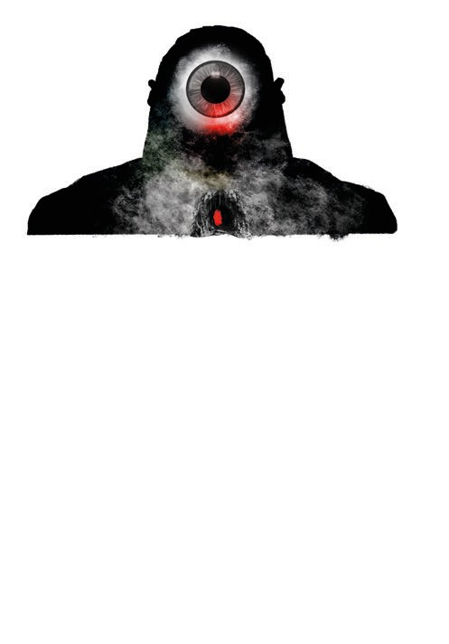
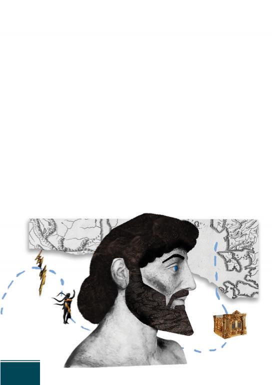
—¡Huésped! –interrogó Alcínoo a modo de saludo–, ¿quién eres y de qué país vienes?, ¿qué quieres de nosotros?
—Difícil sería, oh rey –respondió Odiseo–, contar todos mis infortunios, pues me los han enviado los dioses con gran abundancia. Pero contestaré lo que preguntas. Al retornar de la conquista de Troya, luego de numerosos contratiempos, Zeus descargó su rayo sobre mi nave. Perecieron mis compañeros, pero yo fui llevado por los dioses hasta la isla donde habita Calipso, de lindas trenzas. Estuve allí retenido siete años, pero luego Calipso me invitó a partir. Me dio vestidos, me entregó pan y vino, y envió viento favorable. Mas Poseidón hizo que la nave naufragara y las olas me acercaron a tu país. Tu hija me trajo hasta ti. Mucho he sufrido por voluntad de los dioses: os ruego, preparad una nave, escoged remeros y escoltadme hasta mi patria.
—¡Oídme, feacios! –exclamó Alcínoo–. Como a un hermano debe tratarse al huésped. ¡Y tú, forastero, dime ahora tu nombre y cuál es tu país para que nuestras naves te conduzcan allá! ¡Cuéntanos por dónde anduviste perdido y a qué regiones llegaste!
Entonces, el ingenioso Odiseo comenzó su relato...
Odiseo y los cíclopes
—Soy Odiseo y habito en Ítaca, la isla más remota hacia Occidente que no se eleva mucho sobre el mar. Habiendo partido de Troya, el viento me llevó al país de los cíclopes. Al llegar allí, saltamos a la ribera para entregarnos al sueño y hacer acopio de alimentos. Con unos pocos compañeros, me interné en la isla. Echamos a andar llevando un odre lleno de vino. A poco, descubrimos una gruta; entramos y contemplamos con admiración las ristras de quesos y los corderos y cabritos en los establos.
El hombre que vivía en la gruta era un gigante, un monstruo horrible que no parecía hombre sino bestia; lo vimos descargando leña seca y nos apresuramos a refugiarnos en un rincón oscuro. El monstruo metió a todas sus cabras en el lugar y cerró la entrada con una enorme piedra. Cuando encendió el fuego nos vio, se volvió hacia nosotros, agarró de repente a dos de mis compañeros y los despedazó de un solo golpe. Se preparó con ellos una cena y comió como un león, no dejando ni los huesos. Nosotros contemplábamos horrorizados el espectáculo. Aguardamos a que se durmiera con el propósito de herirle, pero la gruesa piedra que había colocado nos detuvo: aunque lográsemos matarlo, no podríamos salir. Así, esperamos la aurora.
12 13
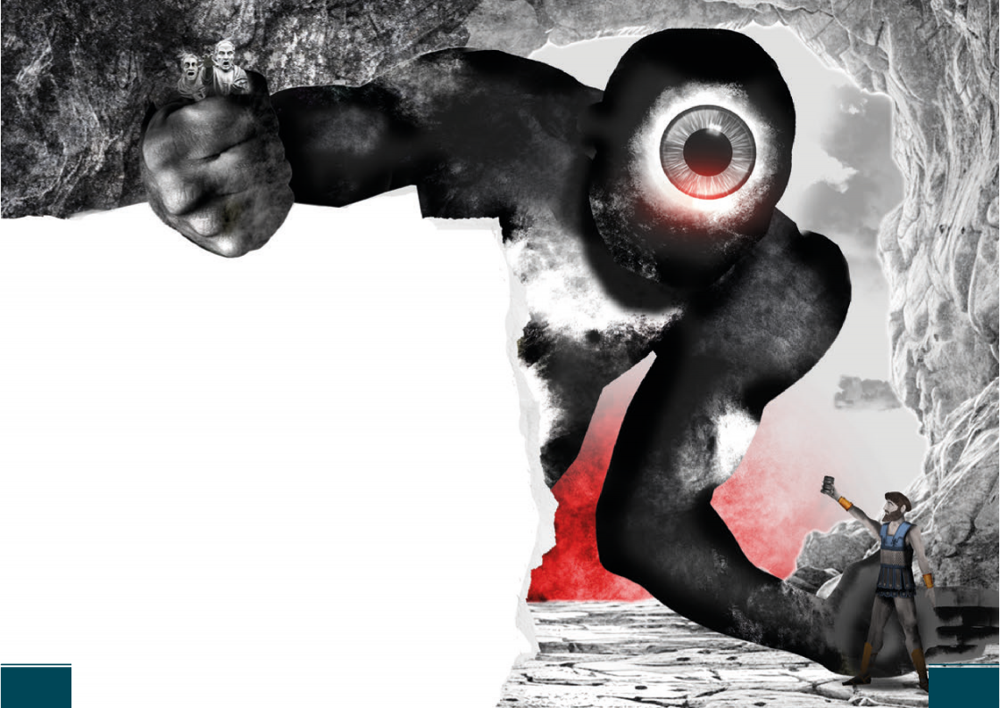
El cíclope despertó, encendió el fuego y ordeñó las ovejas. Seguidamente, echó mano a otros dos compañeros y, como la noche anterior, dispuso con ellos su almuerzo. Después, sacó el ganado de la cueva y la cerró tras de sí con la piedra.
Me pareció que la mejor solución sería la siguiente: sobre el establo, había una gran estaca de olivo, semejante al mástil de un barco; con mis compañeros, pulimos un extremo, la endurecimos con el fuego y la ocultamos bajo el estiércol. A suertes elegimos tres compañeros que junto conmigo clavarían la estaca en el único ojo del cíclope cuando el sueño lo rindiese.
Por la tarde, volvió el cíclope, ordeñó las ovejas y agarró a otros dos de nosotros. Entonces, aproximándome con una copa de vino, le dije:
—Toma, cíclope. Ya que has probado carne humana, prueba esta bebida que se guarda en nuestros buques.
—Dame más –clamó Polifemo cuando lo hubo probado–, y hazme saber tu nombre.
Cuando los vapores del vino envolvieron su mente, le dije:
—Cíclope, mi nombre es Nadie.
—Pues a Nadie me lo comeré último, cuando me haya ofrecido todo el vino –respondió Polifemo. Se echó hacia atrás y se durmió.
14 15
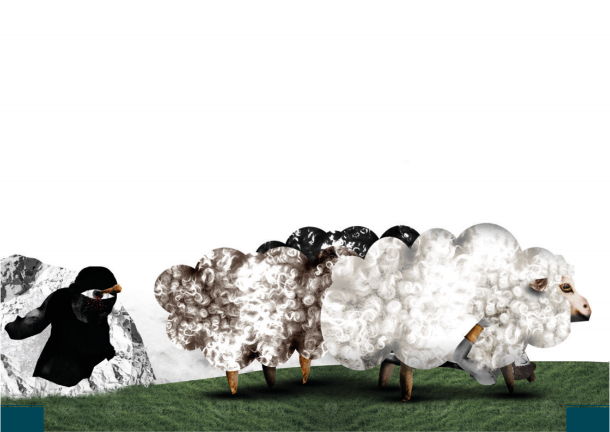
Entonces pusimos la estaca al fuego y, cuando comenzó a arder, la hincamos en el ojo del cíclope haciéndola girar. Polifemo dio un terrible gemido y nosotros huimos. Se arrancó la estaca y comenzó a llamar a gritos a sus amigos cíclopes, quienes acudieron a la cueva.
—¿Por qué gritas de ese modo? –le preguntaron desde afuera los cíclopes.
—Oh, amigos –respondió Polifemo–. Nadie me ha herido.
—Pues si nadie te ha herido, ¿cómo podríamos ayudarte?
Y apenas acabaron de hablar, se retiraron. Yo me reía por cómo lo había engañado.
Polifemo, gimiendo por los dolores, anduvo a tientas, quitó el peñasco de la puerta y se sentó en la entrada con los brazos extendidos para atraparnos si salíamos. Ordené a mis compañeros que cada uno agarrara una oveja y esperamos agazapados bajo sus lanudos vientres. Con la luz del día, salieron los machos presurosos a pacer, y nosotros prendidos a sus pechos.
—¡Carnero querido –gemía Polifemo al palparlos–, tu amo ha sido cegado por un hombre malvado!
Cuando estuvimos lejos de la cueva, nos soltamos del ganado. Llegamos a la nave y nos aprestamos a huir. El cíclope escuchó el golpe de los remos en el mar y, furioso, arrancó la cumbre de una montaña y la arrojó delante de nuestra embarcación, faltando poco para alcanzarnos.
Polifemo invocó a su padre:
—¡Óyeme, Poseidón! ¡Tú eres mi padre! ¡Concédeme que este hombre no vuelva nunca a su palacio! Y si está escrito que ha de volver a ver a los suyos, que sea tarde y con daño y en nave ajena, después de perder a todos sus compañeros.
Todas estas cosas estuvo contando Odiseo en el palacio del rey Alcínoo.
—¡Forastero –clamó el rey–, permanece un poco más entre nosotros y prepararemos la nave que necesitas! Mientras tanto, cuéntanos otras de tus admirables hazañas.
Ante el pedido de Alcínoo, el ingenioso Odiseo retomó su relato…
16 17
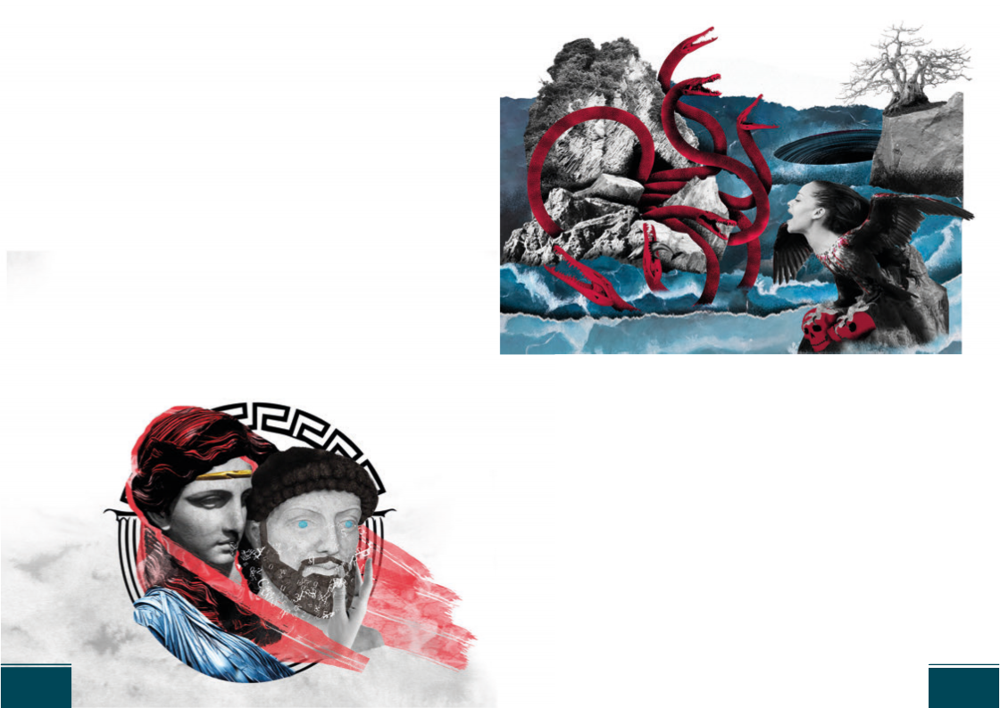
Los consejos de Circe
—Desde la isla de los cíclopes –continuó Odiseo–, seguimos adelante, hasta que llegamos a la isla donde moraba Circe. Enterada de nuestra llegada, la diosa vino a nosotros con pan, carne y vino del color del fuego.
—Comed y bebed, desdichados –exclamó Circe al vernos–. En cuanto amanezca, volveréis a navegar y yo os diré qué debéis hacer para que no padezcáis.
Al anochecer, mis compañeros se acostaron junto a las amarras del buque. Circe me tomó de la mano y me separó de ellos.
—Óyeme lo que voy a decirte: llegarás con tus compañeros a la isla de las sirenas que encantan a los hombres cuando van a su encuentro. Aquel que imprudentemente se acerca a ellas y oye su voz, ya no vuelve a ver a su esposa ni a sus hijos, pues las sirenas lo hechizan con su canto. Pasa de largo y tapa las orejas de tus compañeros; si tú quieres escuchar el canto de las sirenas, hazte atar de pies y manos al mástil de la embarcación.
Habiéndome advertido acerca del peligro de las sirenas, prosiguió Circe con sus consejos:
—Cuando hayas conseguido pasar, deberás atravesar unas altas peñas contra las que rugen las olas. Las naves corren allí mucho peligro. A un lado se halla la cueva donde mora Escila, que aúlla como perra, monstruo perverso de dos pies y seis cuellos larguísimos con los que pesca delfines, perros de mar y, si puede, algunos monstruos. Jamás nave alguna pasó por allí. Al otro lado, verás un árbol frondoso en cuyo pie está Caribdis sobre el agua. Tres veces al día, Caribdis absorbe el agua y otras tantas la echa fuera. Huye de allí, acércate por el contrario a Escila y pasa velozmente. Contra ella no hay que defenderse, hay que huir tan solo.
Al punto apareció la aurora y Circe se internó en la isla. Yo me encaminé al navío y ordené a mis compañeros que desataran las amarras.
18 19
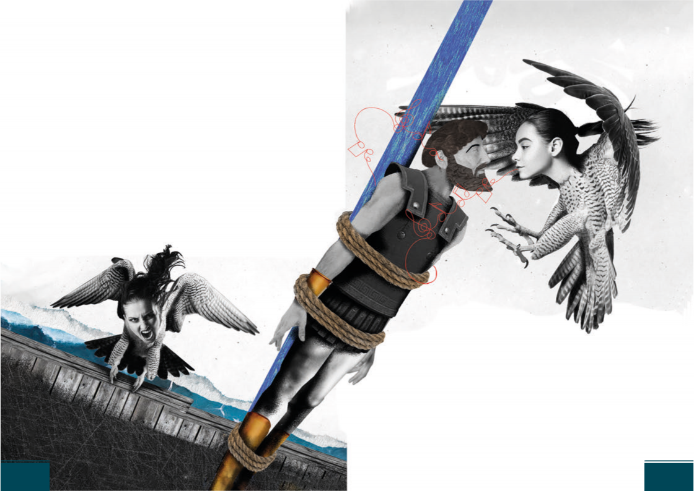
La isla de las sirenas
Soplaba el viento, los hombres batían el mar con sus remos. Entonces les dije:
—Debéis saber que nos aproximamos a la isla de las sirenas; debemos protegernos de su canto porque, de lo contrario, pereceremos.
Mientras explicaba todo a mis compañeros, la nave llegó a la isla de las sirenas. Tomé al instante cera y la partí en pedacitos; la calenté luego a los rayos del sol y tapé los oídos de mis compañeros. Ellos, como les había indicado, me ataron fuertemente al mástil.
Cuando nos hallamos cerca de la orilla, nos divisaron las sirenas y empezaron un sonoro canto:
—¡Acércate, célebre Odiseo, y detén la nave! Nadie que oyera la voz
que fluye de nuestra boca ha pasado de largo.
Así hablaban las sirenas con su hermosa voz. Mi corazón sentía grandes deseos de oírlas; moví las cejas para que mis compañeros me desatasen, pero ellos, obedeciendo mis órdenes, me amarraron con mayor fuerza.
Cuando dejamos atrás a las sirenas y no se percibían sus voces ni sus cantos, mis fieles compañeros desataron mis ligaduras y se despojaron de la cera colocada en sus oídos.
20 21
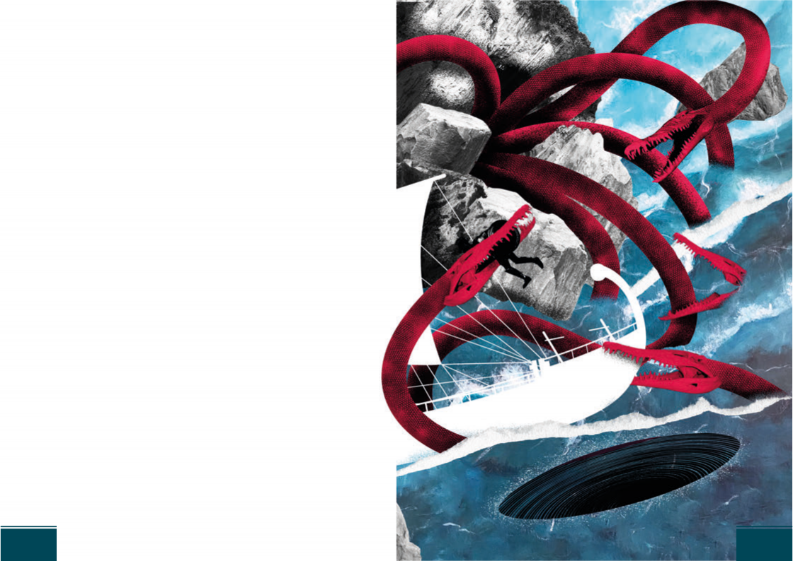
El canal de Escila y Caribdis
Al rato, escuché un fuerte estruendo –continuó Odiseo–, vi elevarse humo y nos rodeó la espuma que formaban las olas. Mis compañeros, temerosos, detuvieron los remos.
—Oh, amigos –clamé–, no somos nuevos en soportar desgracias. Si escapamos del cíclope, también podremos escapar ahora. ¡Vosotros, batid los remos! Y tú, piloto, aparta la nave de ese humo y esas olas, y procura atravesar el lugar.
Obedecieron sin tardanza. No les hablé de Escila ni de Caribdis para que no dejaran de remar. Sin embargo, el miedo se apoderó de nosotros cuando contemplamos a Caribdis. Nuestros ojos no podían apartarse de aquella visión. Fue entonces cuando Escila arrebató de la embarcación a seis compañeros, los que más sobresalían por su fuerza.
Cuando quise volver los ojos a la nave y a mis compañeros, ya vi en el aire sus pies y sus manos, y escuché que me llamaban aterrados pronunciando mi nombre por última vez. Escila devoró a mis compañeros en la entrada de la cueva. De todo lo que padecí, fue este espectáculo el más lastimoso que vieron mis ojos.
Enmudecieron los feacios, arrobados por los relatos de Odiseo.
—¡Oh, Odiseo! –exclamó Alcínoo–. ¡Volverás a tu tierra sin tener que vagar más!
—¡Oh, Alcínoo, rey bondadoso! –respondió Odiseo. —¡Hagan los dioses que vuestros obsequios me conduzcan hasta mi mujer y mis amigos! ¡Y que a ti y a tu pueblo los dioses os concedan toda clase de bienes!
22 23
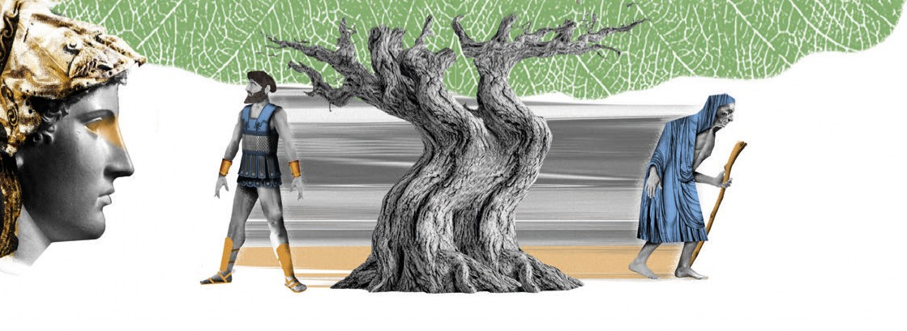
El regreso a Ítaca
Cuando salió la estrella más rutilante, la que anuncia la luz de la aurora, la nave surcaba el mar rumbo a Ítaca. Apenas arribaron a tierra, los feacios desembarcaron a Odiseo y amontonaron al pie de un olivo las riquezas que le habían entregado como obsequio. Odiseo, habiendo estado ausente muchos años, no podía reconocer el suelo de su patria.
Atenea, hija de Zeus, se detuvo junto a él y le dijo:
—Aquí estoy, temerario héroe, incansable en tu dolor. Vengo a trazar contigo un plan: esconde los tesoros que te obsequiaron los feacios y piensa cómo pondrás las manos sobre los pretendientes que hace tres años acosan tu palacio. Penélope les ha prometido elegir nuevo marido cuando termine de tejer el sudario para tu padre, y ha logrado burlarlos destejiendo por las noches lo que tejía durante el día. Por desgracia, los pretendientes han descubierto el engaño y ella ya no puede seguir mintiéndoles... ¡Debes hacer algo!
—¡Oh, diosa! –respondió Odiseo–. ¡Tracemos, sí, un plan para castigar a esos hombres!
—Te asistiré –replicó Atenea–. Voy a volverte irreconocible para que te acerques al palacio: arrugaré tu piel, blanquearé tu cabeza y te vestiré con horribles andrajos. El cuidador de cerdos, que te ama, te informará de todo. Mientras, buscaré a Telémaco, que marchó a Esparta para saber si vivías.
Odiseo avanzó por un áspero camino hasta encontrar al porquerizo sentado cerca de los cerdos custodiados por cuatro perros semejantes a fieras. Los perros corrieron hacia el forastero, pero el porquerizo se apresuró a alejarlos.
—¡Oh, anciano! –le dijo a Odiseo–. Acércate a comer conmigo esta carne de cerdo. Es todo lo que resta, pues los pretendientes devoran los puercos más gordos. Si mi señor estuviera vivo, no permitiría que estos hombres consumiesen sus riquezas de este modo.


24 25

—¡Oh, amigo! –respondió Odiseo–, tu amo volverá a su casa y se vengará de quienes ofendieron a su mujer y a su hijo. ¡Acepto la comida y el dulce vino! Pero, en cuanto salga el sol, haced que me acompañen a la población. Me presentaré ante Penélope para anunciarle estas buenas nuevas.
—¡Ay, huésped! ¿Quieres mezclarte con los pretendientes? Permanece en mi cabaña; espera aquí el regreso del hijo de Odiseo y él te dará un manto y una túnica.
Mientras hablaba, el porquerizo esparcía ramas verdes y las cubría con una piel de oveja para que allí se echara Odiseo a descansar.
El encuentro de Odiseo y Telémaco
Tan pronto amaneció, Odiseo y el porquerizo encendieron el fuego.
Los perros alborotaron, de pronto, con sus saltos y ladridos.
—Se acerca algún amigo tuyo –anunció Odiseo.
Apenas dichas estas palabras, se presentó Telémaco en el umbral.
—¡Has vuelto, Telémaco! ¡Entra, hijo querido! –dijo el porquerizo y lo abrazó.
—¿Qué novedades tienes de mi madre?
—Permanece en el palacio y pasa los días y las noches tejiendo y llorando –respondió el porquerizo.
El joven Telémaco preguntó al ver a Odiseo:
—¿De dónde ha llegado este huésped, abuelo?
—Ha vagado largo tiempo, hijo mío. Te ruego que hagas por él lo que puedas.
—¿Cómo podremos acoger a un forastero en un palacio habitado por los pretendientes? –se lamentó Telémaco–. Forastero, te daré un manto y una túnica, una espada y sandalias, y podrás dirigirte adonde tu corazón te indique.
26 27
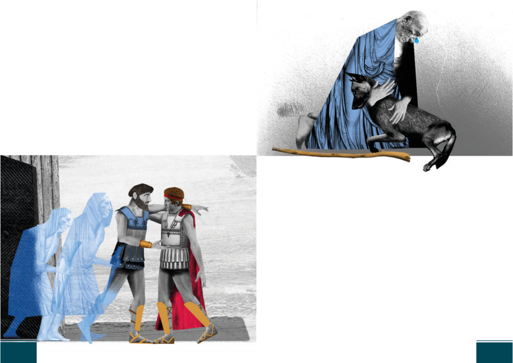
Conmovido, Odiseo salió de la cabaña y allí fuera lo tocó Atenea y se vio al héroe tal como era, con bella indumentaria.
—¡Revélale la verdad a tu hijo, sin ocultarle nada! –exclamó la diosa. Se asombró Telémaco al verle y Odiseo habló así:
—¿Por qué razón te sorprendes? Soy tu padre, por quien soportas tantas desdichas.
Luego, padre e hijo se abrazaron con inmenso gozo.
—Padre –dijo Telémaco–, sé que dos hombres unidos son fuertes, pero los pretendientes son muchos...
—Ve al palacio, Telémaco –manifestó Odiseo–. Mézclate con los pretendientes y llévame como a un anciano mendigo a la ciudad. No digas a nadie que Odiseo está aquí.
Atenea devolvió a Odiseo su aspecto de miserable mendigo. Al amanecer, Telémaco dijo al porquerizo:
—Abuelo, voy a la ciudad a ver a mi madre. Tú lleva contigo al huésped para que mendigue.
Llegó el joven al palacio mientras Odiseo y el porquerizo entraban también en la ciudad. Un perro llamado Argos, que yacía en el suelo, se aproximó a Odiseo. El héroe lo había dejado en su patria, muchos años atrás, al partir hacia Troya. Argos estaba tendido y lleno de garrapatas, pero al ver a su amo lo reconoció y meneó gozoso la cola. A Odiseo se le escapó una lágrima.
—¡Oh, amigo! –dijo al porquerizo que lo acompañaba–, ¡en qué malas condiciones está este perro de tan extraordinaria belleza!
—¡Debiste verlo cuando estaba Odiseo! –respondió el porquerizo–.
Entonces sí que hubieras admirado su belleza.
En ese momento, la muerte se apoderó de Argos, que había resistido veinte años de ausencia para volver a ver a su amo.
28 29
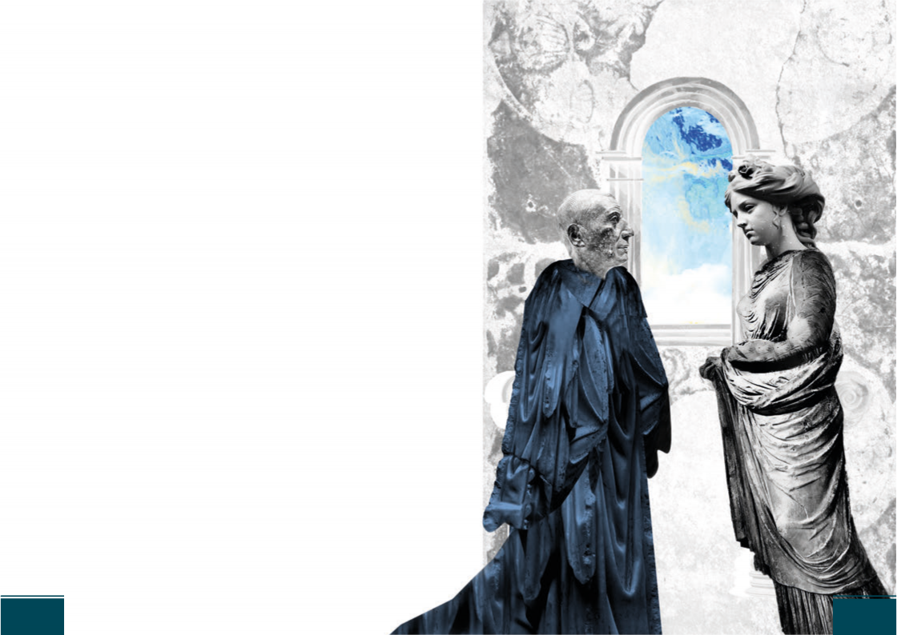
Penélope y el “mendigo”
Telémaco advirtió antes que nadie la llegada del mendigo. Al verlo, uno de los pretendientes se enojó con el porquerizo:
—¿Por qué trajiste a este vagabundo? ¿Es que te parecen pocos los mendigos que andan por la ciudad?
Al enterarse Penélope de la presencia del mendigo en su palacio, ordenó a sus esclavas:
—Decidle al huésped que venga para que lo salude y le pregunte si oyó hablar de Odiseo o lo vio.
Hizo preparar mientras tanto una silla con una piel blanda para que se sentase el forastero. Cuando él se hubo acomodado, Penélope le dijo:
—¡Oh, forastero, quiero saber si en tu largo vagar has conocido a mi esposo!
—¡Oh, Penélope, te diré lo que recuerdo! El hombre que conocí llevaba un manto de lana con un broche de dos agujeros. En la parte anterior del manto, llevaba bordado un perro con un cervatillo.
Penélope lloró al reconocer los detalles del manto de Odiseo.
—¡Huésped! –dijo–. Yo misma di a Odiseo esas vestiduras cuando partió hacia Troya.
—¡Oh, esposa de Odiseo! –dijo el forastero–. Tu esposo vive, ha perdido a todos sus compañeros, pero él vuelve sano y salvo.
—¡Ojalá se cumplan tus palabras! –le respondió Penélope–. Sin embargo, aún deseo hacerte algunas preguntas. Los pretendientes agotan nuestra hacienda, es necesario que me decida por uno de ellos para desalojar a los demás del palacio. No puedo retardar más el certamen atlético entre los pretendientes. Seré la esposa del que maneje mejor el arco.
—¡Oh, Penélope! –exclamó el mendigo–. No retrases el certamen; vendrá Odiseo y, manejando el arco con mayor destreza, vencerá a todos los pretendientes.
30 31
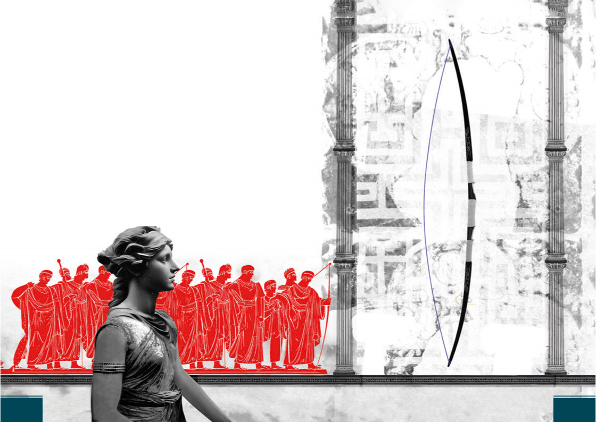
El certamen
Al día siguiente, fue la misma Penélope quien condujo al palacio el arco de Odiseo.
—¡Oh, pretendientes! ¡Oídme todos! Aquí dejo el arco de mi esposo, que no ha de volver. Aquel de vosotros que más fácilmente lo maneje y dé en el blanco, me tendrá por esposa.
Los primeros en probar el arco tuvieron que dejarlo, pues sus manos blandas se estropeaban al pulsarlo. Uno de los pretendientes ordenó en- tonces encender el fuego y derretir una gran bola de sebo para untar el arco con grasa caliente. Sin embargo, ni aun así pudo pulsarlo.
El forastero dijo así:
—¡Oídme, pretendientes! ¡Dadme el arco de Odiseo y veré si tengo la misma fuerza que en mi juventud!
—¡Miserable forastero! –lo increparon los pretendientes–. Eres un vagabundo y un mendigo vil, ¡no toques el arco!
32 33

—¡No es justo ofender a un huésped de mi hijo! –intervino Penélope–.
¿Alguien supone acaso que el anciano logrará tender el arco y ganar el certamen? ¡Ni él mismo ha tenido jamás semejante esperanza!
—¡Bien has hablado! –señaló uno de los pretendientes.
—¡Dadle el arco y veamos! –replicó Penélope–. Si logra tenderlo, le obsequiaré un manto y una túnica, una espada y sandalias para que se dirija adonde desee.
Telémaco entre tanto indicó a sus amigos que custodiasen las puertas:
—¡Que nadie salga! –ordenó.
Con toda serenidad, Odiseo tomó el arco y probó la cuerda, que dejó oír un bello sonido. A los pretendientes les cambió el color del rostro. Odiseo tomó una flecha y tiró de la cuerda, apuntó al blanco y no erró ninguno de los tiros.
34 35
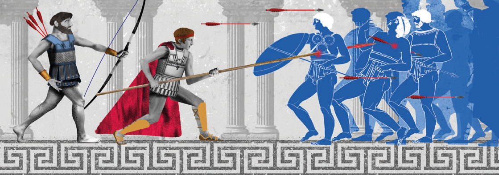
La batalla contra los pretendientes
—¡Oh, Telémaco! –dijo Odiseo, tras haber ganado el certamen–.
¡Dejemos todo esto y preparémonos para pelear!
Telémaco se ciñó la espada, tomó su lanza y se puso de pie junto a su padre. Entonces, Odiseo se despojó de sus andrajos y se colocó de pie en el umbral con el arco y la aljaba llena de flechas.
—¡Perros ruines! –gritó Odiseo a los pretendientes–. Seguramente no creíais en mi regreso y por eso arruinabais mi hacienda. ¿Cómo no habéis temido la venganza de los dioses?
El héroe volvió su arco hacia los pretendientes.
—¡Oh, pretendientes! –exclamó uno de ellos–. Sospecho que este es en verdad Odiseo. No descansará hasta habernos matado a todos con su arco y sus flechas. ¡Desenvainemos las espadas y defendámonos de él!
Uniendo la palabra a la acción, el pretendiente atacó a Odiseo con la espada, pero una certera flecha lo derribó sobre la mesa. Otro avanzó entonces decidido con la espada desenvainada, pero Telémaco arrojó su lanza y lo derribó también.
Odiseo dispuso las flechas para defenderse y atacar a la vez, hiriendo sin interrupción a los pretendientes, que caían uno tras otro. Cuando agotó sus flechas, se cubrió con el escudo.
Él y Telémaco arrojaron sus lanzas, poniendo fuera de combate a varios de los enemigos. Odiseo buscaba con la mirada para ver si descubría con vida a alguno de los pretendientes, pero todos yacían en el suelo en un mar de sangre.
Pronto acudieron todas las esclavas y rodearon a Odiseo alborozadas.
—No es piadoso alborozarse de tantas muertes –dijo Odiseo.


36 37
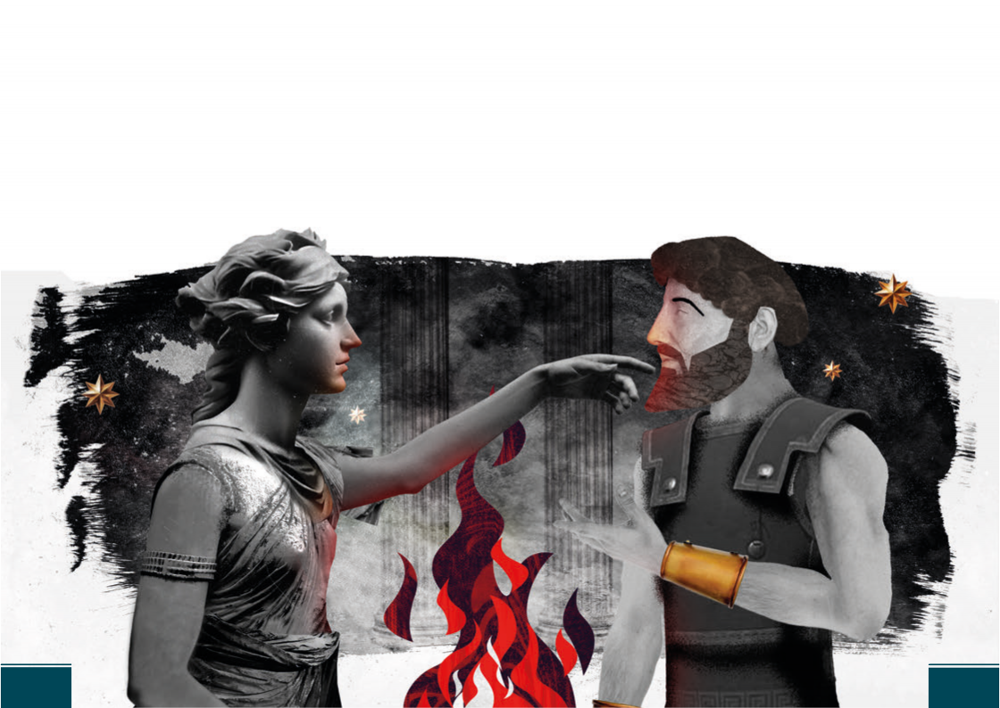
El fin de la desdicha
Terminado el enfrentamiento de Odiseo y Telémaco con los pretendientes, una de las viejas criadas fue en busca de Penélope:
—¡Ha llegado Odiseo! Tu esposo querido está en el palacio y ha dado muerte a los pretendientes que tanto te ofendieron.
Al darse cuenta de que la criada no mentía, Penélope descendió de su aposento y se acercó a su esposo querido, iluminado por el fuego de la hoguera.
Telémaco dijo a su madre:
—¡Oh, madre! ¿Por qué no vas a abrazar a mi padre? ¿Por qué no le haces preguntas y le abres, a la vez, tu corazón?
Odiseo sonrió y dijo:
—Penélope, tú y yo hemos sufrido largas desventuras. Mientras tú llorabas aquí por mi ausencia, yo aguantaba los incesantes infortunios que Zeus me enviaba. Pero ahora, al fin, nos hemos reunido. Tú cuidarás mis bienes y yo repondré el ganado que los pretendientes insaciables han devastado.
38 39
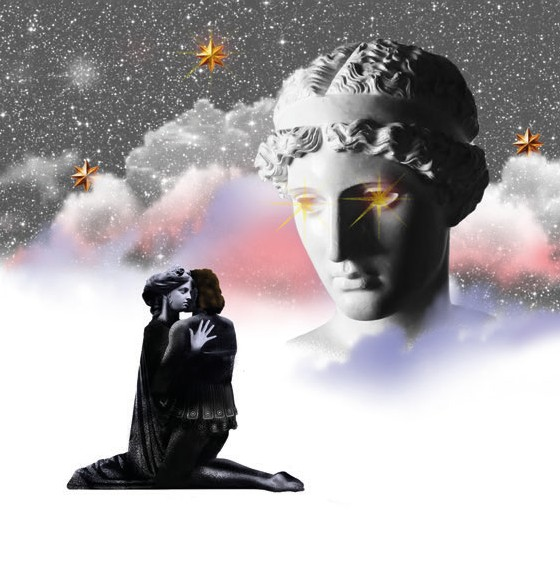
—¡Oh, Odiseo! Los dioses nos cubrieron de desdichas impidiéndonos que disfrutásemos de nuestra juventud. Pero ahora, ¡abraza por fin a tu Penélope!
—¡Oh, Penélope! –dijo Odiseo–. Todavía nos quedan días de dicha
hasta llegar al fin de nuestras vidas.
Atenea, cuando comprendió que Odiseo y Penélope se habían recreado lo suficiente con la conversación, permitió que el sueño se derramara sobre ellos.

40